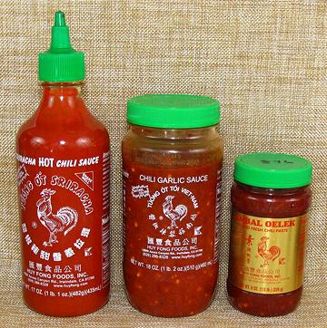

Huy Fong Chili Sauces

The Huy Fong "Rooster Sauce" products are made here in Los Angeles
(Irwindale). David Tran, the founder of the company, now building a
worldwide market that includes Southeast Asia, was forced out of
Vietnam during "ethnic cleansing" after the war (Chinese ancestry).
"Huy Fong" was the name of the ship he escaped to the United States
on. He re-established the family business here, selling first to our
huge Asian population - in large chunks of LA the signs are mostly
in Chinese, Vietnamese and Korean.
Huy Fong sauces are made from red ripe Jalapeno peppers, because
that's what the David Trang likes. Jalapenos didn't grow in Asia until
these sauces came out, but you can bet they're being grown there now
(Serranos are already big in Thailand due to influence from our Thai
restaurants). Huy Fong is one of the great Los Angeles success stories.
These sauces are so popular some Asian companies have imitated the Huy
Fong's trade dress, and there have been lawsuits.
Sriracha Sauce
is a popular table sauce originating from the
Thai resort town of Si Racha on the Bay of Bangkok. Moderately hot at
about H4 it is now very popular worldwide.
In North America it's a very popular ingredient in the famous
Vietnamese
Banh Mi Sandwiches.
It is gaining popularity in Vietnam, with Vietnamese visitors packing
the stuff back in their luggage, but it is still considered a Thai sauce
by many Vietnamese. Ing: chilis. sugar, salt, garlic, distilled vinegar,
potassium sorbate, sodium bisulfite, xanthan gum - about the same as
Southeast Asian products.
Chili Garlic Sauce
is a standard sauce both as a recipe
ingredient and as a table condiment in Thailand, Vietnam and southern
China. At about H5 it's hotter than
the Sriracha sauce. Ing: chilis, salt, garlic, distilled vinegar,
potassium sorbate, sodium bisulfite, xanthan gum.
Sambal Olec
is a standard sauce in Indonesia and Malaysia, both
as a recipe ingredient and as a table condiment. At about
H5 it's hotter than the Sriracha Sauce and
just a shade hotter than the Chili Garlic Sauce (it's basically the same
thing but without the garlic). Ing: chilis. salt, distilled vinegar,
potassium sorbate, sodium bisulfite, xanthan gum.
More on Chili Sauces & Potions.
cp_huyfong 170403 www.clovegarden.com
© Andrew Grygus - agryg@clovegarden.com - Photos on
this page not otherwise credited are ©
cg1.- Linking to and non-commercial use of
this page permitted.